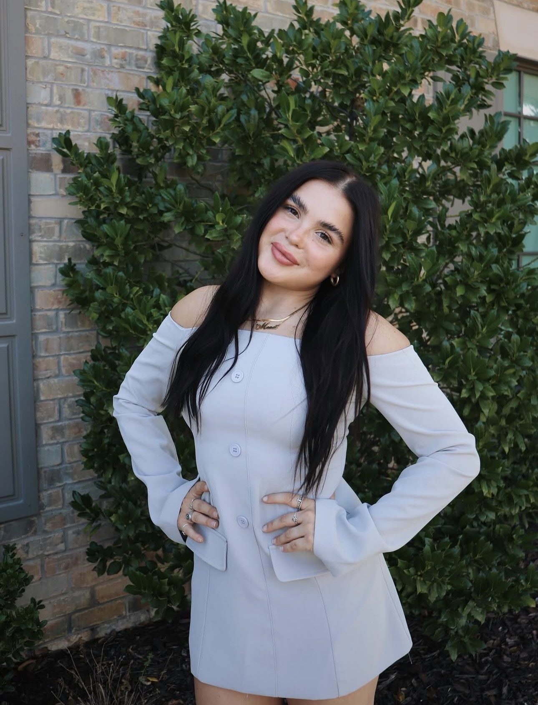

Education
Texas Tech University Bachelor of Arts, 2022–2026, studying Criminology, Forensic Science, and English with completion of the American Sign Language Program.
I am a Texas Tech University senior pursuing a Bachelor of Arts in Criminology and Forensic Science with a minor in English. My background in leadership, guest operations, and administrative support has helped me develop strong communication, organization, and problem-solving skills.
I am interested in coordinator, administrative, operations, and support roles where I can contribute through professionalism, attention to detail, and strong teamwork.

Texas Tech University Bachelor of Arts, 2022–2026, studying Criminology, Forensic Science, and English with completion of the American Sign Language Program.
Experience leading recruitment, coordinating events, managing communication, and supporting large teams.
Event operations, customer service, public speaking, project management, and multitasking under pressure.